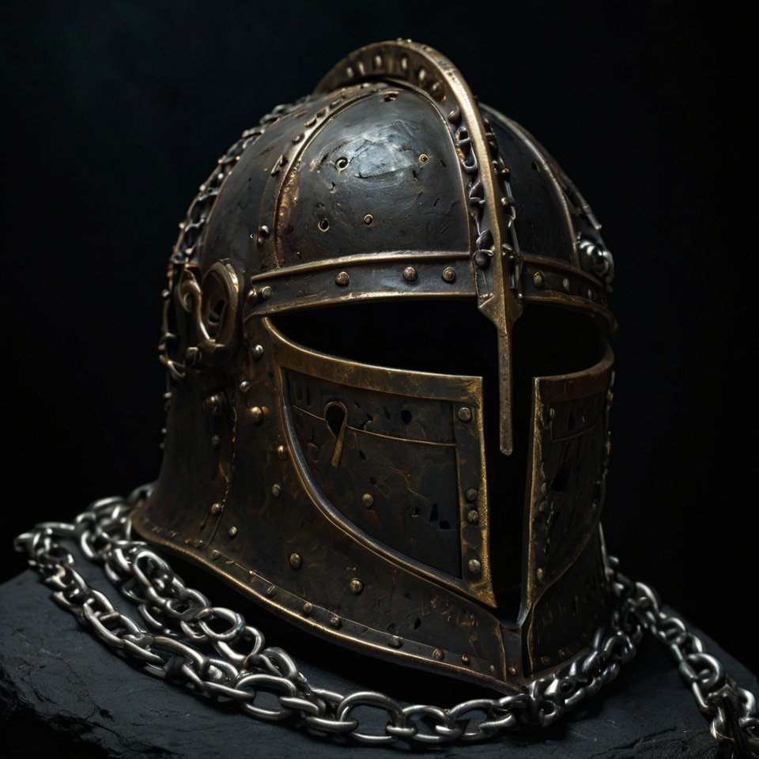
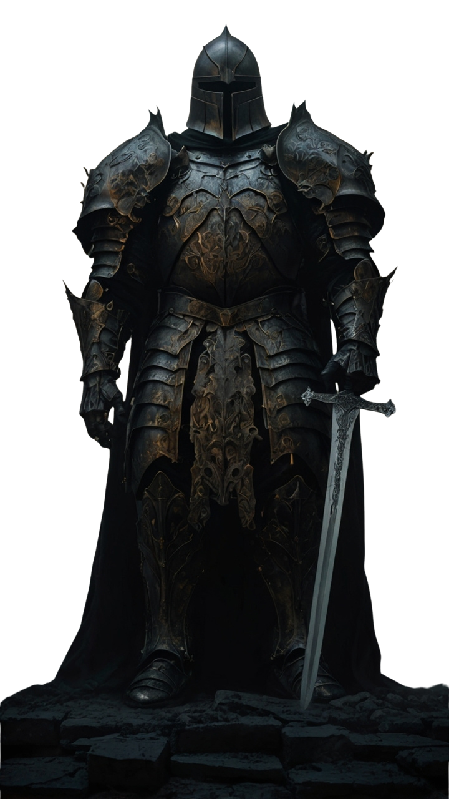

The Orders were not formed to guard the living.
They were formed to ensure what sleeps beneath
does not wake through those who seek it.
Every knight who has ever stood vigil
understood, eventually, that the gate
opens from the inside.

...the third seal was not broken. It was answered.
Something on the other side had been waiting
with the correct response for longer than
the seal had existed...
...we did not discover the Veil.
The Veil allowed itself to be found.
The distinction matters more than
any of us understood at the time...
...the last Ashward wrote only one word
before the vigil took him.
The word was not a warning.
It was a confirmation...